การใช้งานโปรแกรมในการออกแบบเครือข่าย การคอนฟิกสวิตช์ การคอนฟิกเราเตอร์ การสร้างค่าติดตั้งสวิตช์และเราเตอร์ การนำค่าติดตั้งที่ได้ไปใช้งาน
การคอนฟิกเราเตอร์
ขั้นที่ 1 |
เปิดโปรแกรม สร้างเราเตอร์ และเลือกเมนู config ดังรูปที่ 32 |
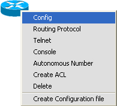
รูปที่ 32 แสดงขั้นตอนการใช้งานเมนู Config เพื่อกำหนดค่าให้เราเตอร์
ขั้นที่ 2 |
กำหนดค่า IOS Version, hostname,และ Password ดังรูปที่ 33 |
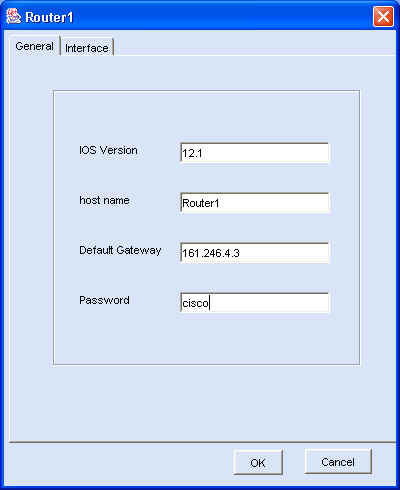
รูปที่ 33 แสดงการกำหนดค่าทั่วไปของเราเตอร์
การกำหนดค่าอินเทอร์เฟสของเราเตอร์
1) การกำหนดค่าให้อินเทอร์เฟส FastEthernet
ขั้นที่ 1 |
เลือกเมนู Config เลือกอินเทอร์เฟส FastEthernet ที่ต้องการกำหนดค่าแล้วเลือกปุ่ม Properties ดังรูปที่ 34 |
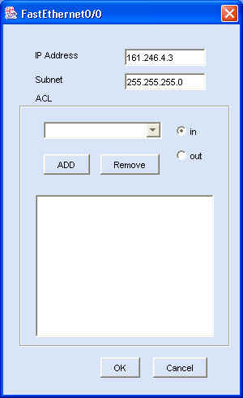
รูปที่ 34 แสดงการกำหนดค่าให้อินเทอร์เฟส FastEthernet0/0
2) การกำหนดค่าให้อินเทอร์เฟส Serial
ขั้นที่ 1 |
เลือกเมนู Config เลือกอินเทอร์เฟส Serial ที่ต้องการกำหนดค่าแล้วเลือกปุ่ม Properties ดังรูปที่ 35 |
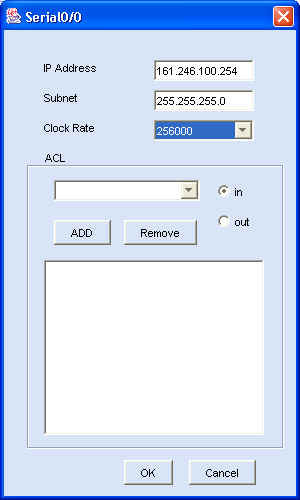
รูปที่ 35 แสดงการกำหนดค่าให้อินเทอร์เฟส Serial0/0
การกำหนดค่าซับอินเทอร์เฟสของเราเตอร์
ขั้นที่ 1 |
สร้างซับอินเทอร์เฟสของ FastEthernet0/0 ให้กับเราเตอร์ โดยเลือก FastEthernet0/0 และเลือกปุ่ม Sub-Interface ดังรูปที่ 36 |
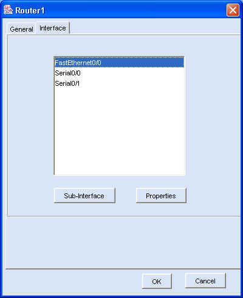
รูปที่ 36 แสดงการเลือกอินเทอร์เฟส FastEthernet0/0 เพื่อกำหนดค่าติดตั้ง
ขั้นที่ 2 |
เลือกปุ่ม New เพื่อสร้างซับอินเทอร์เฟส
ดังรูปที่ 37 |
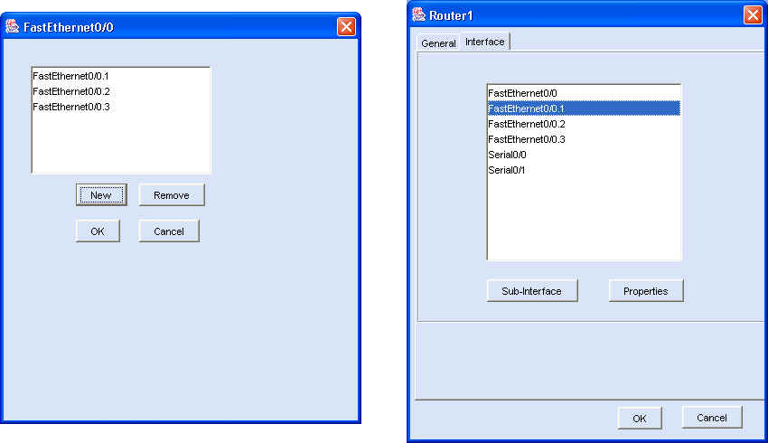
รูปที่ 37 แสดงการเลือกสร้างซับอินเทอร์เฟส
ขั้นที่ 3 |
กำหนดรายละเอียดให้กับแต่ละซับอินเทอร์เฟส ดังรูปที่ 38 |
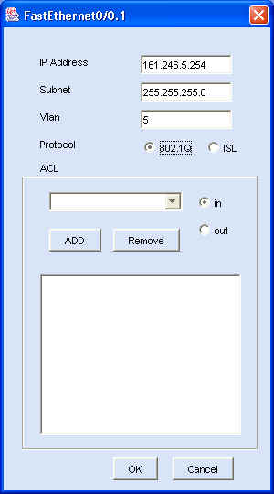
รูปที่ 38 แสดงการกำหนดค่าติดตั้งให้ซับอินเทอร์เฟสFastEthernet0/0.1
1) การเลือกเส้นทางแบบดีฟอล์ตเราท์
ขั้นที่ 1 |
เลือกเมนู Routing Protocol ดังรูปที่ 39 |
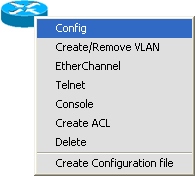
รูปที่ 39 แสดงการใช้งานเมนู Routing Protocol
ขั้นที่ 2 |
เลือกเมนู Routing Protocol เลือกปุ่ม ADD เพื่อกำหนดค่าดังรูปที่ 40 |
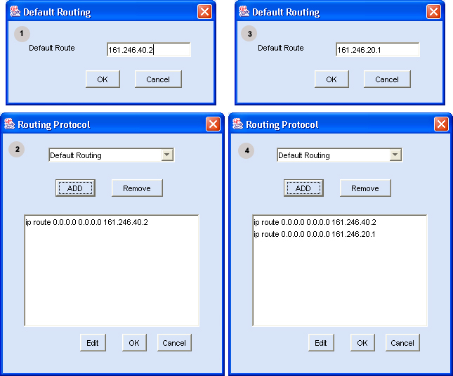
รูปที่ 40 แสดงการกำหนดดีผอล์ตเราท์ให้เราเตอร์
2) การเลือกเส้นทางแบบสแตติกเราท์
ขั้นที่ 1 |
เลือกเมนู Routing Protocol |
ขั้นที่ 2 |
เลือกเมนู Routing Protocol เลือกปุ่ม ADD เพื่อกำหนดค่าดังรูปที่ 41 |
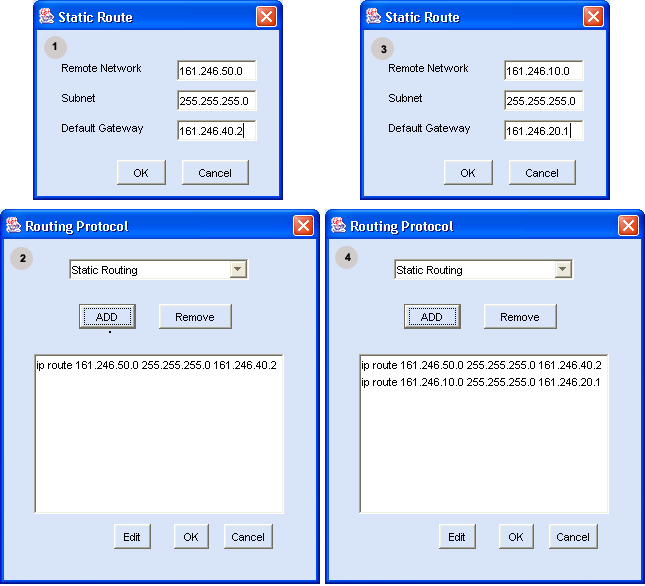
รูปที่ 41 แสดงการกำหนดสแตติกให้เราเตอร์
3) การเลือกเส้นทางแบบไดนามิกเราท์
ขั้นที่ 1 |
เลือกเมนู Routing Protocol |
ขั้นที่ 2 |
เลือกเมนู Routing Protocol เลือกปุ่ม ADD เพื่อกำหนดค่าดังรูปที่ 42 |
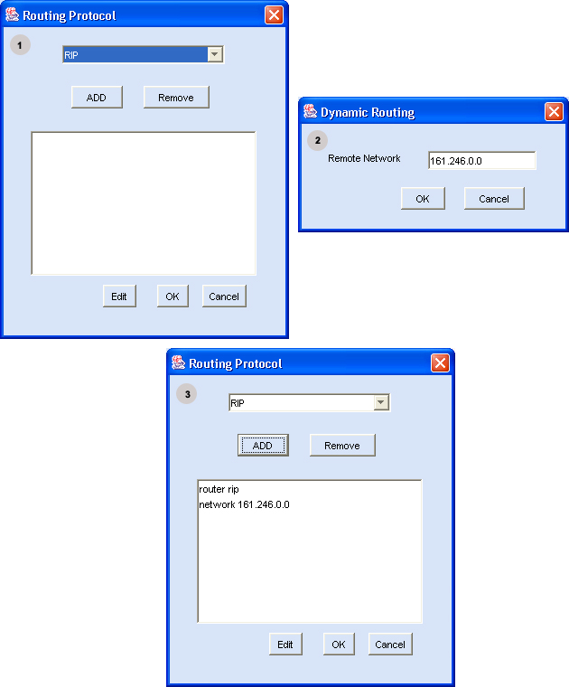
รูปที่ 42 แสดงการกำหนดอาร์ไอพีเราท์ให้เราเตอร์์